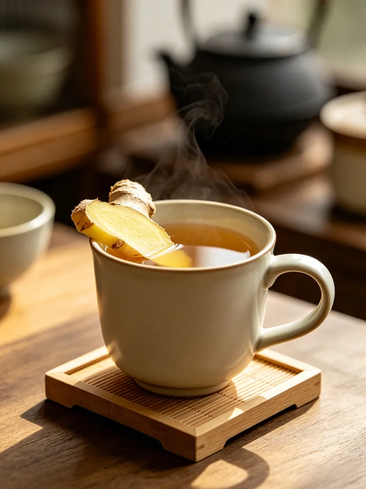

Traditional Habits by Category
A slow tour through old Chinese domestic customs — warm water, gentle food, quiet rhythms. Each category below gathers practices that have traveled through kitchens and living rooms for generations. Nothing here is a substitute for professional advice. Everything here is shared as cultural memory.
Warm Foot Soaks
There's something about warm water at the end of the day that needs no explanation. In Chinese households, the evening foot soak is less a treatment and more a punctuation mark — the thing that separates the working hours from the winding-down hours. Some families add mugwort. Some add salt. Some add nothing at all. The water is the point.
-
Dried Mugwort Foot Soak
A bundle of dried mugwort, a basin of warm water — a neighborly tradition passed through generations without anyone writing down the measurements.
-
Sichuan Peppercorn Foot Soak for Cold Feet Comfort
Sichuan peppercorns steeped in hot foot water — a folk remedy from cold-damp regions for warming numb, achy feet in winter.
-
Ginger Foot Soak for Cold Feet Comfort
On cold Chengdu nights she sliced old ginger into a basin of hot water and soaked her feet until they glowed pink. "Warm feet, good sleep," she'd say.
Kitchen Comforts

The simplest things from the kitchen often mean the most. Ginger steeped in hot water after a meal. Rice cooked slow until it barely holds its shape. These aren't recipes you'll find in a cookbook — they're the kind of things you learn by standing next to someone who learned by standing next to someone else.
-
Ginger and Date Warm Sip
Fresh ginger slices and dried red dates in hot water — one of the most ordinary after-meal moments in a Chinese kitchen. Sweet, peppery, undemanding.
-
Plain Rice Congee: The Comfort Bowl
Rice and water and time — that's the whole recipe. The bowl that shows up at breakfast tables, sickbeds, and late-night suppers alike.
-
Chinese Yam and Millet Porridge for Gentle Stomach Soothing
A creamy congee of Chinese yam (shan yao) and millet — a gentle recovery food from the traditional Chinese kitchen.
-
Scallion White Root Tea for Cold Onset
Before anyone in our house took medicine for a cold, my grandmother reached for scallions — the white roots boiled in water, the kitchen's first answer.
-
Morning Warm Water: The First Kitchen Ritual
Before anything else — before the congee, before the tea — a single cup of warm water by the kitchen window. The quietest habit in the house, and the first one of the day.
-
When the Cough Wouldn't Stop, Grandma Went to the Kitchen
A pear, a few pieces of rock sugar, water. Simmered for half an hour in the middle of the night — the kitchen's quietest answer when a child couldn't stop coughing.
-
Mung Bean Soup for Summer Afternoons: A Chinese Folk Cooler
Unsweetened mung beans, cooked until they split open in the water, then left to cool — a brief three-o'clock pause in the heat of a Sichuan summer.
-
The Dark Amber Drink That Cooled a Beijing Summer
Smoked dark plums, hawthorn, tangerine peel, and yellow rock sugar, finished with osmanthus — the sour, smoky summer jar that every hutong household kept on the fridge door from June to August.
Everyday Rituals
Some habits don't fit neatly into "kitchen" or "bedtime." They're just things people did — without fanfare, without a name — because someone before them had done the same. A bundle of soap pods hanging from a nail by the sink. The milky water left from washing rice. This section is for the rituals that slipped through the cracks of bigger categories.
-
Rice Water Rinse: What My Grandmother Did with Leftover Rice Water
Before shampoo came in bottles, the milky water left from washing rice lived in a chipped enamel jar on the bathroom shelf — a kitchen leftover that found a second life.
-
Soap Pods by the Kitchen Sink: A Chinese Household Tradition
Dried honey locust pods hanging from a nail by the sink — the same plant that washed our hair, our dishes, and our hands for generations.
Cloth Warmth
Clean cloth and gentle heat — an old approach to stiff shoulders and chilly knees that costs almost nothing and requires no special equipment. The key is the same as with all heat: test it on your own wrist first, keep the session short, and stop if anything feels wrong.
-
Coarse Salt Warm Pack
Pan-toasted coarse salt sewn into a cotton bag — the heat pad my grandmother made from an old pillowcase. Stays warm for twenty minutes and costs pennies.
-
Moxibustion at Home: Warming the Knees
Every winter evening my grandmother lit a moxa stick and held it over her knees — a quiet half-hour of mugwort warmth while she watched TV.
-
Warm Towel Eye Compress
After a long afternoon of sewing by the window, a warm towel folded over closed eyes — the five-minute evening reset that costs nothing but a little hot water.
Sleep & Calm
Quiet routines for winding down — the Chinese kitchen has its own approach to the hours before bed. Not pills or tinctures, but warm cups of things that grow nearby and have been used the same way for as long as anyone can remember.
-
Sour Jujube Seed Tea for Restful Evening
Suan zao ren (sour jujube seed) brewed as a nighttime tea — one of the most well-known traditional herbal preparations for restless sleep.
-
Goji Berry Tea for Tired Eyes
Every afternoon my grandmother reached for the tin canister on the second shelf — a handful of dried red berries in hot water, and twenty minutes of quiet by the window.
-
Post-Meal Walk: A Simple Digestive Habit
The old Chinese custom of a short stroll after eating — settling the stomach and the mind before sleep.
-
The Bedding Airing Ritual: Chasing the Smell of Sun on Cotton
On the first clear morning after weeks of grey, every household in the courtyard carried their quilts outside — a seasonal habit that made the bedroom smell like sunlight.
-
The Twenty-Minute Post-Lunch Pause: A Midday Reset Habit
Not a nap. Not a workout. Just twenty minutes of quiet after lunch — a pause my grandmother called "letting the meal settle."
Seasonal Comfort
Habits for the changing seasons — when the air turns dry and the body asks for something gentle.
-
Winter Melon Throat Comfort Tea
Every autumn my grandmother simmered winter melon chunks with yellow rock sugar until the pot filled with its own amber syrup. A slow, quiet kitchen ritual for the weeks when the air turns crisp and your throat asks for something gentle.
-
Chrysanthemum Tea for Autumn Dryness: A Cooling Ritual
One dried chrysanthemum flower, steeped all day, held in both hands — her face tilted just above the steam, pushing back against the dry autumn air.
The Huangdi Neijing advises: adapt to the seasons, harmonize your moods, dwell in peace. A warm foot soak or a quiet kitchen sip follows that old sense of daily balance. Shared here as cultural reference, not as instruction.
Referenced from Huangdi Neijing - Lingshu (Yellow Emperor's Inner Classic)